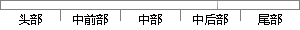

图像的信息熵来衡量图像的清晰度，
片段位置图

相似结果
相似片段：
值，当图像处于最清晰位置时，灰度方差评价函数取得最大值。 4、灰度熵函数[6][21] 成像过程是一定量的光能量在像平面上的随机分布 ,我们可以通过图像的信息熵来衡量图像的清晰度.散焦越严重,相邻像素之间的影响越大,该焦距下图像的光能量分布相对于清晰图像时趋于平均分布.从熵的概念来说,均匀分布时熵值最大,所以当图像
| 对比库： | WriteCheck云资源库 |
| 来源： | www.yangsky.com 查看来源 |
| 发布时间： | 2014-01-18 |
| 相似率 | 100% （严重抄袭） |